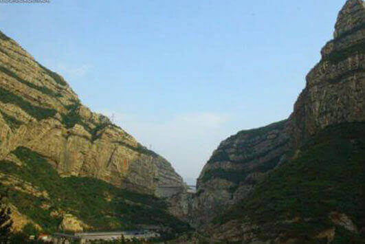

morly旅游网
恒山，亦名“太恒山”古称玄武山、崞山，高是山，玄岳。恒山位于山西省大同市浑源县城南10公里处，距大同市市区62公里。北岳恒山与东岳泰山、西岳华山、南岳衡山、中岳嵩山并称为五岳，为中国地理标志，是天下道教主流全真派圣地。其中，倒马关、紫荆关、平型关、雁门关、宁武关虎踞为险，是塞外高原通向冀中平原之咽喉要冲。其山脉祖于阴山，发脉于管涔山，止于太行山，沿东北走向蜿蜒而来，奔腾起伏，横亘塞上，东西绵延五百里，锦绣一百零八峰。恒山主峰天峰岭位于浑源县境内，海拔2016.1米，号称“人天北柱”、“绝塞名山”，叠嶂拔峙，气势雄伟，被誉为北国万山之宗主。恒山以山西恒山风景名胜区的名义，被国务院批准列入第一批国家AAAA级风景名胜区名单。
恒山有许多好玩的景点，例如金龙峡、恒山松、桃花洞、恒山云、恒山庙、悬空寺、恒山十八景等。金龙峡，位于天峰岭和翠屏峰之间，峡谷幽深，峭壁侧立，石夹青天，最窄处不足三丈。这里是古往今来的绝塞天险，交通要冲。金龙峡内，悬崖中腰有古栈道盘绕，名为“云阁”。恒山松，风格别致，形状奇特。其中，有四株形状奇特的唐代古松，人称这为“四大夫格”。这四株古松，根部悬于石外，紧抓岩石，傲然挺立，气势不凡，别具风格。桃花洞属于恒山“七宫八洞十五庙”之一，位于真武大殿后的恒宗峰上。传说，这里是桃花仙女修行的所在。玉女原在王母娘娘蟠桃园值守，后下凡投胎到北岳富户人家，因素喜桃花，人称桃花女。桃花女善禳镇之术，常为百姓破解疑难杂症，故得百姓爱戴。桃花洞外有大量恒山桃花群，历百年而茁壮常新，清明前后桃花盛开，红若香珠，灿若彩霞，点缀着山谷，传递着春意。恒山云，变幻无穷，十分美丽。恒山庙，以北岳庙为首，稳坐于西峰之上，苍松之间，或隐或露。恒山悬空寺位于山西大同市浑源县，是全国重点文物保护单位，也是国内仅存的佛、道、儒三教合一的独特寺庙。恒山十八景包括磁峡烟雨、龙泉甘苦、云阁虹桥、虎口悬松、果老仙迹、云路春晓、断崖啼鸟、危岩夕照、金鸡报晓、茅窟烟火、奕台鸣琴、玉羊游云、脂图文锦、岳顶松风、幽窟飞石、仙府醉月、紫峪云花、石洞流云。其中美丽景色，妙不可言。只待你亲身感受，才可知其中滋味。
怎么样，恒山的景点是不是很特别？你还在等什么呢？空闲时刻，去嵩恒山的走一走、看一看，去感受它的独特魅力。
交通指南
飞机：坐飞机的游客抵达大同云冈机场后，坐机场大巴至大同长途汽车南站，再由大同长途汽车南站乘客车前往恒山。
火车：
乘火车的游客抵达大同火车站后，再打车到大同长途汽车南站，再从大同长途汽车南站乘客车出发前往恒山。从大同火车站打车到大同汽车南站约40分钟，15元左右。
汽车：从大同汽车站搭乘去浑源的客车即可到悬空寺，然后打车或步行前往恒山。车程约2小时。大同-悬空寺6:30-11:00每半小时一班，票价31元。恒山离悬空寺大约四五公里，打车10元左右。
旅游贴士
1、恒山属温带半干旱大陆性气候，四季分明，夏季雨量集中，秋季多为晴朗天气，早晚温差大，年平均温度6.1℃。
2、最佳旅游特点：春赏桃花，夏、秋避暑，冬观雪景。
3、由于恒山景区2018年夏季降雨频繁，恒山庙群步游路极易落石，危及游客安全，自2018年8月11日景区可能对步游道不定时地进行封闭。如封闭时，游客可经索道上下。
桃花洞
桃花洞位于真武大殿后的恒宗峰上,桃花洞外有大量桃花群，每到清明前后桃花盛开，红若香珠，灿若彩霞。
悬空寺
恒山悬空寺位于山西大同市浑源县，是国内仅存的佛、道、儒三教合一的独特寺庙。
金龙峡
金龙峡，居于天峰岭和翠屏峰之间，峡谷幽深，峭壁侧立，石夹青天，最窄处不足三丈。这里是古往今来的绝塞天险，交通要冲。
夕阳岭
夕阳岭，位于果老岭东侧，是一段插入云天的万仞绝壁，面西峭立，每当夕阳西下，“余晖反照千山色，满峪参差入画中”，奇光异景，令人神往。
内容整理至网络，如有侵权，请联系我们！1255394075@qq.com